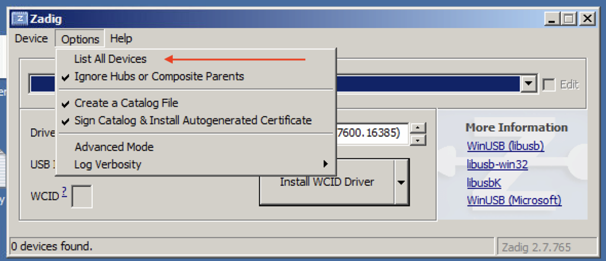
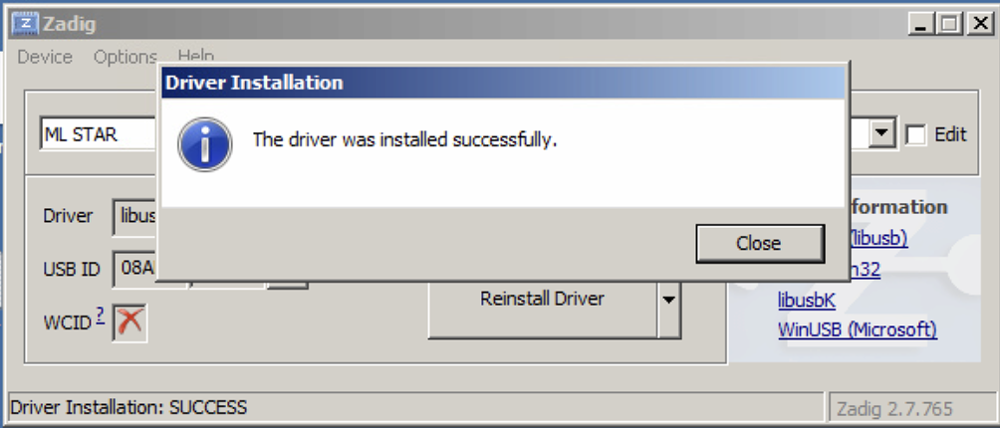

Installation#
These instructions describe how to install PyLabRobot.
Note that there are additional installation steps for using the firmware (universal) interface to Hamiltons and Tecans, see below.
Installing PyLabRobot#
It is highly recommended that you install PyLabRobot in a virtual environment.
Here’s how to create a virtual environment using venv:
mkdir your_project
cd your_project
python -m venv env
source env/bin/activate # on Windows: .\env\Scripts\activate
From source#
Alternatively, you can install PyLabRobot from source. This is particularly useful if you want to contribute to the project.
git clone https://github.com/pylabrobot/pylabrobot.git
cd pylabrobot
pip install -e ".[dev]"
See CONTRIBUTING.md for specific instructions on testing, documentation and development.
Using pip (often outdated NOT recommended)#
The PyPI package is often out of date. Please install from source (see above).
The following will install PyLabRobot and the essential dependencies:
pip install pylabrobot
If you want to build documentation or run tests, you need install the additional dependencies. Also using pip:
pip install "pylabrobot[docs]"
pip install "pylabrobot[testing]"
There’s a multitude of other optional dependencies that you can install. Replace [docs] with one of the following items to install the desired dependencies.
fw: Needed for firmware control over Hamilton robots.http: Needed for the HTTP backend.websockets: Needed for the WebSocket backend.simulation: Needed for the simulation backend.opentrons: Needed for the Opentrons backend.agrow: Needed for the AgrowPumpArray backend.plate_reading: Needed to interact with the CLARIO Star plate reader.inheco: Needed for the Inheco backend.dev: Everything you need for development.all: Everything. May not be available on all platforms.
To install multiple dependencies, separate them with a comma:
pip install 'pylabrobot[fw,http]'
Or install all dependencies at once:
pip install 'pylabrobot[all]'
Using the firmware interface with Hamilton or Tecan robots#
If you want to use the firmware version of the Hamilton or Tecan interfaces, you need to install a backend for PyUSB. You can find the official installation instructions here. The following is a complete (and probably easier) guide for macOS, Linux and Windows.
Reminder: when you are using the firmware version, make sure to install the firmware dependencies as follows:
pip install pylabrobot[fw]
On Linux#
You should be all set!
On Mac#
You need to install libusb. You can do this using Homebrew:
brew install libusb
Warning
People have reported issues with not being able to find the machine on macOS 15 Sonoma. No solution to this is currently known. See this thread.
On Windows#
Installing#
Download and install Zadig.
Make sure the Hamilton is connected using the USB cable and that no other Hamilton/VENUS software is running.
Open Zadig and select “Options” -> “List All Devices”.

Select “ML Star” from the list if you’re using a Hamilton STAR or STARlet. If you’re using a Tecan robot, select “TECU”.

Select “libusbK” using the arrow buttons.

Click “Replace Driver”.

Click “Close” to finish.

Uninstalling#
These instructions only apply if you are using VENUS on your computer!
If you ever wish to switch back from firmware command to use pyhamilton or plain VENUS, you have to replace the updated driver with the original Hamilton or Tecan one.
This guide is only relevant if ML Star is listed under libusbK USB Devices in the Device Manager program.

If that”s the case, double click “ML Star” (or similar) to open this dialog, then click “Driver”.
Click “Update Driver”.
Select “Browse my computer for driver software”.

Select “Let me pick from a list of device drivers on my computer”.

Select “Microlab STAR” and click “Next”.

Click “Close” to finish.

Troubleshooting#
If you get a usb.core.NoBackendError: No backend available error: this may be helpful.
If you are still having trouble, please reach out on discuss.pylabrobot.org.
Cytation imager#
In order to use imaging on the Cytation, you need to:
Install python 3.10
Download Spinnaker SDK and install (including Python) https://www.teledynevisionsolutions.com/products/spinnaker-sdk/
Install numpy==1.26 (this is an older version)
If you just want to do plate reading, heating, shaknig, etc. you don’t need to follow these specific steps.